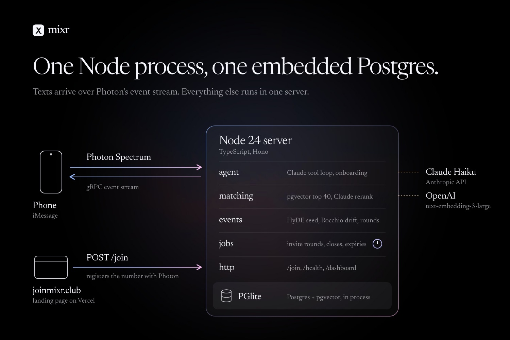

mixr
An entire social network in your messages.
Text mixr what you're into. It finds UW students who want the same thing, gets you into events, and plans the meetup. No app, no forms.
Built at DubHacks '26 for the Cook Smarter track and the Photon track.
Meeting people is easy to want and annoying to organize.
Apps that match students already exist. What they skip is everything after "you two should hang out", and that is where most plans die:
- finding a time
- picking a place
- getting enough people to actually say yes
- dealing with whoever cancels the morning of
mixr is an agent for that coordination work, and it lives in iMessage because students answer texts and don't open new apps.
Sign up with a phone number.
At joinmixr.club you type your number. mixr registers it with Photon, hands you your own mixr line to text, and waits for you to text first. It never texts a number cold.
Onboarding is a text conversation.
Four short steps in iMessage, run by plain code rather than the model, then the agent takes over.
- Reply YES to opt in
- Your full name
- Your @uw.edu emailA branded email brings a six-digit code. Codes are hashed, never stored or logged.
- The codeVerified: mixr sends its contact card.
- Say what you're into, in your own wordsClaude rewrites it into a profile and asks one follow-up if a skill level is missing.
Meet one person, only if you both say yes.
Ask mixr to find someone. It asks them first, and shares numbers only when both sides agree. Then each of you gets the other's contact card.
- You ask for someone to climb, study or jam with
- mixr finds a match and asks them
- Both say yesA note is passed on only in the person's own words, never one the model wrote.
- Contact cards go both ways
Host an event by describing it.
Say what, when, where and how many. mixr invites the best-matched students in quiet rounds until the event fills.
- Never over capacity. Extra yeses go on a waitlist.
- "Busy friday" is not "not my thing". Guests answer in plain words, and only the second one teaches the matcher about taste.
- Stops an hour before start. No late invites.
- Parallel 1:1 threads. Group threads need a dedicated Photon line, so mixr runs each meetup as one-to-one threads and acts as the go-between.
How mixr decides who to ask.
Every student is one vector. People searches and event invites go through the same pipeline, and every step lands in a trace.
Hybrid recall
Vector rank counts 1, BM25 rank 0.5. BM25 only scores rare query terms (in 20% of profiles or fewer), so "CSE 332" or "tennis 4.0" gets found when embeddings blur it.
Event drift (HyDE + Rocchio)
E0 embeds Claude's profile of the ideal attendee. Y is the mean of the yeses, N of "not my thing". "Busy friday" moves nothing.
Invite round size
p is the event's own yes rate, clamped to 0.15–0.8, and 0.35 until five people reply. 32 candidates come from near Et and 8 from near E0, so early yeses can't pull it into one clique.
Native on iMessage, still right on Android.
mixr reads which service each person texts from and sends rich content only where it renders. Everything falls back to a plain text.
| iMessage | RCS | SMS | |
|---|---|---|---|
| Tapback | tapback | tapback | none |
| Confetti | screen effect | text | text |
| Contact card | vCard | text with number | text with number |
| Reply | threaded | plain text | plain text |
| Link | rich preview | text + URL | text + URL |
The agent decides when a tapback says enough instead of a filler reply. Built on Photon 2.0: texts arrive over Spectrum's gRPC stream, replies leave through an outbox with retries and dedupe. The Android paths are tested in code; a run on a real Android phone is still to do.
Built on the real UW calendar.
mixr pulls UW's public events calendar once a day, scrubs it and archives it, so the history stays after events drop off the feed.
- Demo events come from it. Upcoming student-friendly events are imported into the demo pool.
- Two pools that never meet. 50 hand-written demo students on a clock we can fast-forward, and real people who joined on the site. The demo pool never sends a real text.
- Everything is inspectable. The dashboard shows every recall, rerank and invite round, and a 2D map of every profile vector.
Hard rules live in code, not in the prompt.
A small model is easier to trust when code holds the rules it must never break.
Numbers only on a mutual yes
Texts use first names. A full name and number are shared only when both sides of an intro agree.
Opt-in only
People join on the site and text first. mixr never texts first and never scrapes a directory.
STOP, START and HELP always work
STOP is honored at once and cancels anything queued. None of them spend a model call.
Caps on everything
3 intro requests per person per 24 hours, 30 texts an hour, and a daily cap on Claude requests.
Blocks before ranking
Blocks and "must" requirements are filtered in SQL before the model sees a candidate. No filtering by gender or protected traits.
Their words, not the model's
A note passed between two people is kept only if it is the sender's own words from their text.
Verification without storing codes
A @uw.edu code proves inbox access. Codes are hashed, never stored or logged.
No personal data in the repo
Secrets and the database live on the server, never in git.
Built to run with real users tomorrow.
It already carries real conversations on an iPhone, verification email and all.

The eval harness, before and after hybrid recall
npm run eval runs two revisions on 30 labelled queries (15 exact, 15 semantic) and 7 scripted conversations.
| Metric | Before | After |
|---|---|---|
| Exact-term MRR, recall stage | 0.844 | 0.967 |
| Recall@10, all queries | 0.973 | 0.995 |
| MRR after Claude rerank | 0.983 | 1.000 |
| Reply length, characters per turn | 227 | 148 |
| Claude call time, mean | 3.09 s | 2.73 s |
| Estimated cost of the run | $0.065 | $0.055 |
| Semantic MRR, recall stage | 0.878 | 0.802 |
One row got worse. After the Claude rerank, semantic MRR is 1.000 both before and after.
- 235 offline tests with a fake model, fake embeddings and an in-memory database. CI runs them on every pull request.
- Auto-deploy with rollback. A new commit on main is tested on the server before it goes live, and rolled back if /health doesn't answer within 45 s.
- Room to grow. Photon 2.0's free tier allows 10 registered numbers. Going past that is a plan change on the same project, not a code change.
Three of us, one weekend.
Matching dev
Matching, the simulator dashboard and the server.
Agent dev
The agent and the website.
Messaging dev
iMessage, onboarding and verification.
Text mixr.
Open the site on your phone, type your number, and text the line it gives you. UW students only, for now.
joinmixr.clubThe live line is capped at 10 registered numbers on Photon 2.0's free tier.